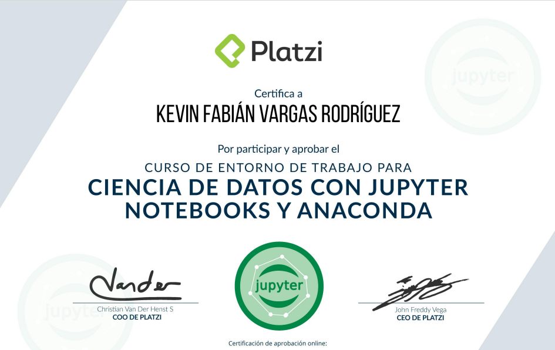
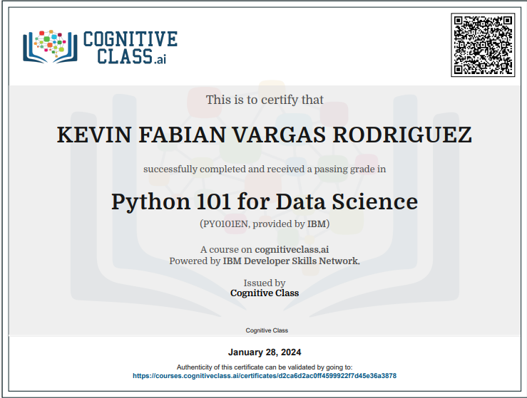
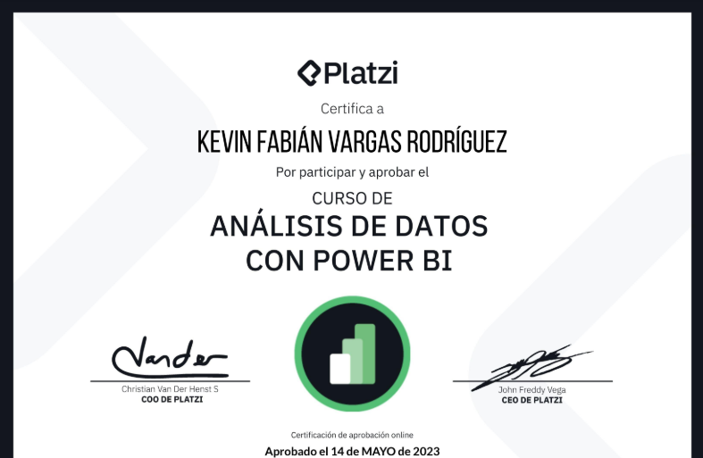
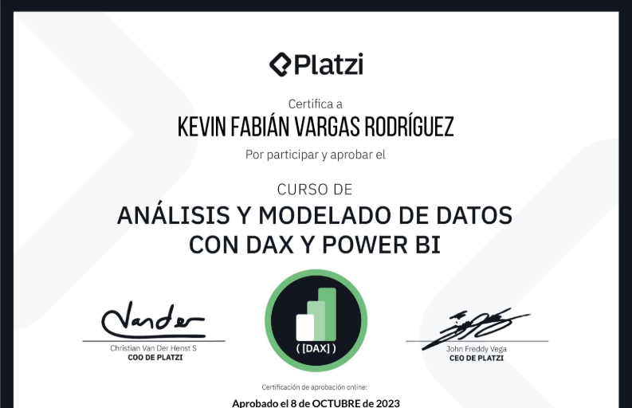

Kevin Fabian Vargas Rodriguez
Especialista en Business Intelligence | Análisis de Datos | Minería de Datos
Analista de datos con más de 3 años de experiencia transformando datos complejos en información estratégica para la toma de decisiones. Actualmente especializado en Business Intelligence con enfoque en optimización de procesos y mejora continua.
¿Qué valor aporto a tu organización?
- Identificación de patrones y tendencias ocultas en los datos
- Automatización de procesos de recolección y análisis de datos
- Desarrollo de dashboards interactivos para monitoreo KPI
- Optimización de bases de datos para mejorar el rendimiento
- Implementación de soluciones ETL para integración de datos
Experiencia Profesional
Analista de Business Intelligence - Teleperformance
- Desarrollo e implementación de dashboards estratégicos para la alta dirección
- Automatización de reportes operativos reduciendo tiempos de generación en 60%
- Análisis predictivo de métricas de desempeño con Power BI y Python
- Integración de múltiples fuentes de datos para creación de Data Warehouse
- Capacitación a equipos operativos en el uso de herramientas de BI
Analista de Datos - Empresa XYZ
- Desarrollo de pipelines ETL para procesar más de 500,000 registros diarios
- Creación de dashboards en Power BI para 5 departamentos diferentes
- Automatización de reportes semanales, reduciendo tiempo de generación en 70%
- Implementación de sistema de alertas tempranas para anomalías en datos
Practicante en Minería de Datos - ABC Corp
- Extracción y limpieza de datos de múltiples fuentes usando Python
- Participación en proyecto de análisis de sentimiento en redes sociales
- Desarrollo de scripts para web scraping con Selenium y BeautifulSoup
- Optimización de consultas SQL reduciendo tiempos de ejecución en 40%
Logros Destacados
Reducción de Costos
Identificación de ineficiencias operativas que generaron ahorros anuales de $120K
Automatización
Reducción de 8 horas a 30 minutos en generación de reportes mensuales
Análisis Predictivo
Modelo de predicción de ventas con 85% de precisión
Impacto Operativo
Dashboards implementados mejoraron la productividad en 25%
Habilidades Técnicas
Business Intelligence
Bases de Datos & ETL
Análisis de Datos
Herramientas Adicionales
Metodología de Trabajo
Definición de Requerimientos
Identificación de KPIs críticos y necesidades de información con stakeholders
Integración de Datos
Diseño de arquitectura y conexión a múltiples fuentes de datos
Transformación y Modelado
Limpieza, enriquecimiento y modelado dimensional de datos
Desarrollo de Soluciones
Creación de dashboards interactivos y reportes automatizados
Implementación y Capacitación
Despliegue de soluciones y entrenamiento a usuarios finales
Enfoque en Business Intelligence
Mi enfoque en BI combina comprensión empresarial con habilidades técnicas para desarrollar soluciones que:
- Proporcionan una única fuente de verdad para toda la organización
- Permiten análisis self-service para equipos no técnicos
- Integran datos operativos y estratégicos
- Facilitan la identificación de oportunidades de mejora
- Reducen la dependencia de reportes manuales
Certificaciones
Comprometido con el aprendizaje continuo y la actualización profesional en el campo del Business Intelligence y análisis de datos:





Formación Académica
Ingeniería de Sistemas
Universidad Nacional de Colombia - En curso
Diplomado en Business Intelligence
Universidad de los Andes - 2024
Especialización en Analítica de Datos
Platzi - 2023
Contacto
¿Interesado en trabajar juntos?
Actualmente abierto a oportunidades desafiantes en el campo de Business Intelligence y análisis de datos. No dudes en contactarme:
Teléfono
+57 313 8359141Ubicación
Medellín, Colombia
Disponibilidad
Abierto a oportunidades remotas e híbridas